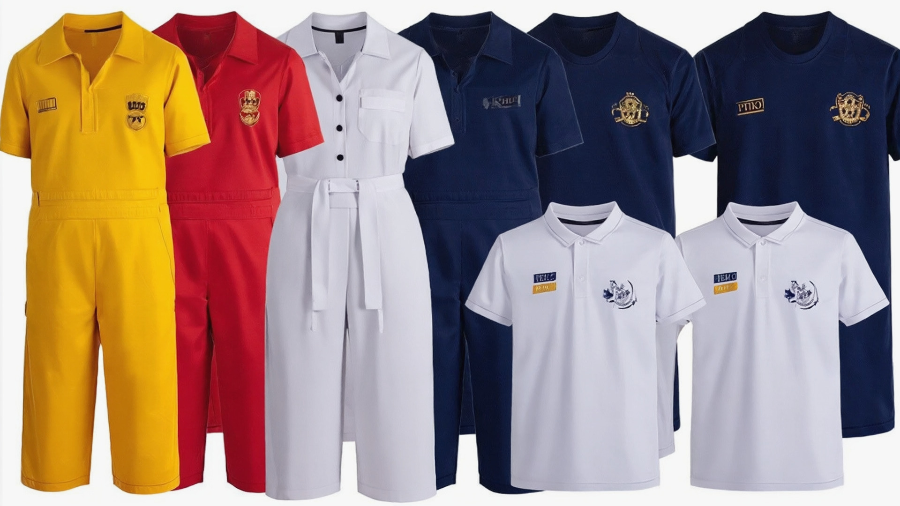
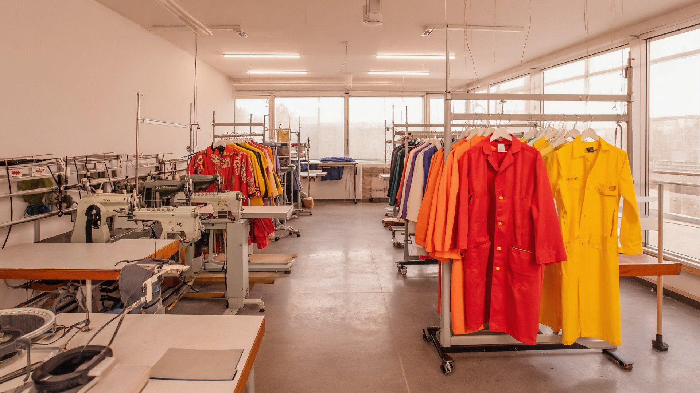

La branche confection Korhogo de Yiri Services est spécialisée dans la réalisation de vêtements et d'uniformes professionnels Côte d'Ivoire pour les écoles, entreprises, ONG, administrations et particuliers. Nous concevons et produisons des tenues adaptées au climat, à l'usage intensif et à l'image de votre structure, avec un souci permanent de qualité et de durabilité.
Du tee-shirt événementiel à la combinaison de chantier, en passant par les tenues EPS, les blouses médicales et les gilets de sécurité, nous vous proposons une solution complète, de la prise de mesure à la livraison. Avec Yiri Services Korhogo, vous bénéficiez d'un travail soigné, de délais respectés et d'un accompagnement personnalisé.
Nous réalisons des tee-shirts et polos personnalisés pour tous vos événements : mariages, anniversaires, funérailles, sorties d'association, campagnes de sensibilisation, journées sportives. Vous choisissez les couleurs, les visuels et les textes, nous nous occupons de la confection et de l'impression. Nos tee-shirts sont confortables, résistants et imprimés avec des techniques adaptées à l'usage intensif.

Yiri Services produit des combinaisons de travail, salopettes, tenues d'atelier et uniformes professionnels Côte d'Ivoire pour le BTP, l'industrie, les garages, la logistique, la sécurité, etc. Nos modèles sont conçus pour protéger vos équipes tout en restant confortables. Possibilité de marquer vos tenues avec le logo de votre entreprise grâce à notre service d'impression et de broderie à Korhogo.

Nous équipons les écoles et institutions avec des tenues EPS adaptées aux activités sportives : survêtements, shorts, polos, tee-shirts, tous aux couleurs de votre établissement. Nous confectionnons également cravates, vestes, gilets de cérémonie et tenues de représentation pour les entreprises, les chorales, les groupes de danse et les institutions.
Pour cliniques, hôpitaux, laboratoires, pharmacies et cabinets privés, Yiri Services Korhogo propose des blouses médicales, surblouses, chapeaux et accessoires. Nos blouses sont résistantes, faciles à entretenir et adaptées aux exigences d'hygiène du secteur médical en Côte d'Ivoire. Possibilité d'ajouter le nom, la fonction et le logo de l'établissement.
Nos gilets de chantier haute visibilité sont conçus pour les équipes de BTP Korhogo, les sociétés de sécurité, les ONG et les structures institutionnelles. Disponibles en plusieurs couleurs, avec bandes réfléchissantes et poches fonctionnelles, ils renforcent la sécurité et l'image professionnelle de vos équipes sur le terrain.
4 étapes simples pour votre commande de confection.
Vous nous contactez (téléphone, WhatsApp, email, visite au bureau) et nous échangeons sur vos besoins en confection.
Nous vous proposons un devis détaillé (modèles, quantités, prix, délais) pour vos uniformes professionnels.
Nous lançons la confection, avec contrôle des finitions, des tailles et du marquage.
Nous livrons à Korhogo et environs, avec possibilité d'ajustements selon vos retours.
Contactez Yiri Services au +225 07 09 43 62 74 ou écrivez à direction@yiriservices-ci.com pour vos uniformes et tee-shirts événementiels.
Demander un Devis